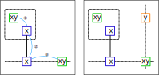

W-Wing
候補数字が2個のセルをbivalue cellといいます。
W-Wingは、同じ候補数字のbivalue cell1組とリンクで構成するパターン系Lockedの解析アルゴリズムです。
次の図で説明します。同じ候補数字(x、y)をもつ1組のbivalueセル(緑枠)が、
数字ｘの ①弱いリンク-②強いリンク-③弱いリンク と結びついているとします（左図）。
このとき、2つのbivalueセル(緑枠)と同時に関係をもつセル(オレンジ枠)が候補数字ｙをもつことはできません(右図)。

解析アルゴリズムは、次のとおりです。
- bivalueセルのリストを作成する。
- bivalueセルのリストから組合せにより2セル（P,Q)を選ぶ。
- P,Qは同じ候補数字をもち、異なるHouseに属することをチェックする
- 強いリンクLを1つ選ぶ。Lの両端セルは、P,Qと弱いリンクを形成することを確認する。
- Pの影響圏とQの影響圏の共通部分に除外候補があるかをチェックする。あればW-Wing
XY-Wingの例を示します。右の図場面には、この解を含め全部で9つのW-Wingがあります。


..973..81.8...9...7.5.84..33....82.74.2.......786..4.5...8.6..26........8.74.15.6
.4......512..7..8667..9.32......7..2..28.37..4..2......93.8..5771..5..638......9.
w-Wingの解析プログラム
W-Wingの解析プログラムです。上記のアルゴリズムを順にコード化してあります。
一点だけ補足します。[24,25]強いリンクの両端セルとP,Qが弱いリンク形成することは、
弱いリンクを検索するのではなく、ConnectedCells関数でチェックしています。
public partial class CellLinkGen: AnalyzerBaseV2{
public bool Wwing( ){
if(BVCellLst==null) BVCellLst = pBDL.FindAll(p=>(p.FreeBC==2)); //BV:bivalue
if(BVCellLst.Count<2) return false;
BVCellLst.Sort((A,B)=>(A.FreeB-B.FreeB));//重要
CeLKMan.PrepareCellLink(1); //strong Link生成
bool Wwing=false;
var cmb = new Combination(BVCellLst.Count,2);
int nxt=99;
while(cmb.Successor(nxt)){
UCell P=BVCellLst[cmb.Cmb[0]];
UCell Q=BVCellLst[cmb.Cmb[1]];
nxt=0;
if( P.FreeB!=Q.FreeB ) continue;//(選んだ2セルは同じ数字)
nxt=1;
if( ConnectedCells[P.rc].IsHit(Q.rc) ) continue;
foreach( var L in CeLKMan.IEGetCellInHouse(1) ){//1:strongリンク
int no1B=(1<<L.no);
if( (P.FreeB&no1B)==0 ) continue;
if( L.rc1==P.rc || L.rc2==Q.rc ) continue;
if( !ConnectedCells[P.rc].IsHit(L.rc1) ) continue;
if( !ConnectedCells[Q.rc].IsHit(L.rc2) ) continue;
int no2B=P.FreeB.BitReset(L.no);
string msg2="";
Bit81 Elm= ConnectedCells[P.rc] & ConnectedCells[Q.rc];
foreach( var E in Elm.IEGetUCeNoB(pBDL,no2B) ){
E.CancelB=no2B; Wwing=true; //W-Wing fond
if(SolInfoDsp) msg2 += " "+E.rc.ToRCString();
}
if(Wwing){
SolCode=2;
if(SolInfoDsp){
UCell A=pBDL[L.rc1], B=pBDL[L.rc2];
int noBX=P.FreeB.DifSet(no2B);
P.SetNoBBgColor(noBX,AttCr,SolBkCr2);
Q.SetNoBBgColor(noBX,AttCr,SolBkCr2);
A.SetNoBBgColor(no1B,AttCr,SolBkCr);
B.SetNoBBgColor(no1B,AttCr,SolBkCr);
string msg0= " bvCell: "+_XYwingResSub(P) +" ,"+_XYwingResSub(Q);
string msg1= " SLink: "+A.rc.ToRCString() +"-"+B.rc.ToRCString()+"(#"+(L.no+1)+")";
Result = "W Wing Eli.;#"+(no2B.BitToNum()+1)+" in "+ msg2.ToString_SameHouseComp();
ResultLong = "W Wing\r"+msg0+"\r"+msg1
+ "\r Eliminated: #"+(no2B.BitToNum()+1)+" in "
+ msg2.ToString_SameHouseComp();
}
if( !AnMan.SnapSaveGP(true) ) return true;
Wwing=false;
}
}
}
return false;
}
}